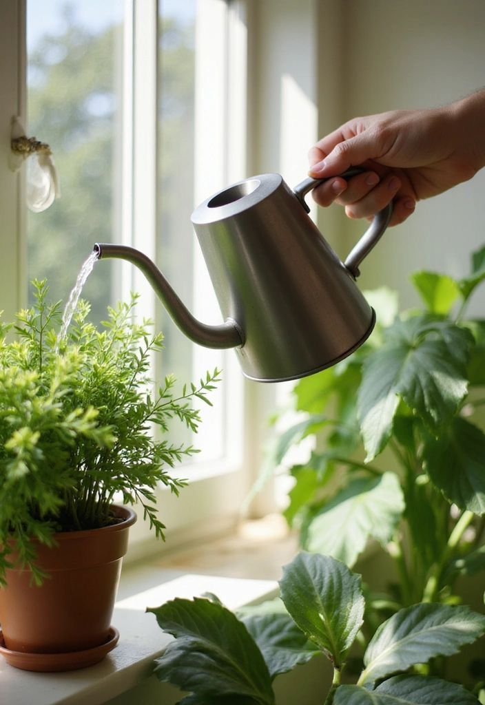
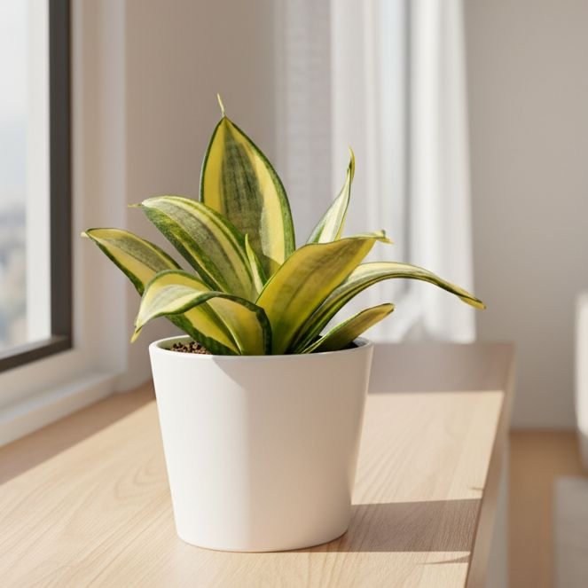
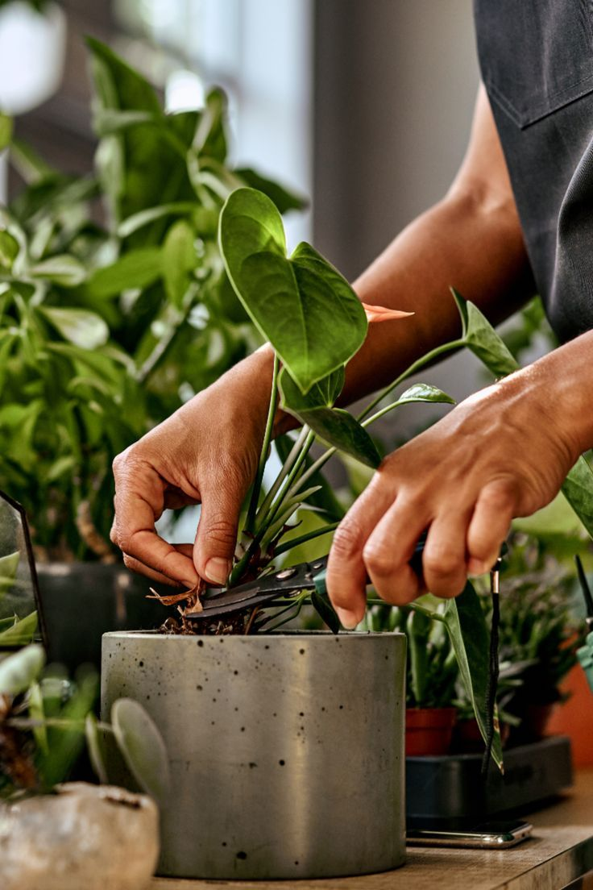

Master the essentials of indoor plant care with these factual, easy-to-follow rules.

Overwatering is the leading cause of indoor plant death. Roots need oxygen just as much as they need water. If the soil is constantly soggy, the roots will rot.
The Golden Rule: Always check the soil before watering. Poke your finger about 1 to 2 inches into the soil. If it feels completely dry, it is time to give your plant a thorough soak until water drains out the bottom. If it still feels moist, wait a few more days.

Plants rely on sunlight for photosynthesis to create food, but intense, direct UV rays can scorch and burn delicate indoor foliage. Most tropical houseplants thrive in conditions that mimic a forest canopy.
The Golden Rule: Aim for "bright indirect light." This means placing your plant in a brightly lit room, but keeping it out of the direct path of harsh sunbeams. Placing a sheer white curtain over a sunny window is the perfect way to filter the light beautifully.

Indoor plants gather dust just like your furniture. A layer of dust on the leaves literally blocks sunlight, making it harder for the plant to photosynthesize and grow.
The Golden Rule: Gently wipe the leaves with a damp cloth once a month. Additionally, don't be afraid to prune! Trimming away dead, yellow, or brown leaves stops the plant from wasting energy on dying foliage and redirects it toward producing fresh, healthy new growth.